HTML/CSSのファイルの作成方法、HTML/CSSの基礎文法やその他知っておくと便利なこと、HTMLファイルからCSSファイルを読み込む方法などについて、学習しましょう。
本章では実際にHTMLとCSSのファイルを作成し、そこに書き込んでいくことで、HTML/CSSについてそれぞれ以下のような項目を学習します。
上記の内容を勉強することで、次章以降で実践的に行っていくhtml/cssの学習の準備をします。
HTMLはブラウザにどんな要素があるかを示す言語です。.htmlという拡張子のファイルにHTMLの文法にそって記述していきます。HTMLを書き込んだこのファイルをブラウザに読み込ませることで、HTMLが「見た目」に変換され表示されます。
HTMLを書く前にまずある程度の文法について理解しておきましょう。本項では、HTMLの一番の基本となる開始タグと閉じタグ、そしてHTMLの要素のタイプについて学びます。
前の章で、HTMLは箱を定義するものだという説明をしました。実はここでいう箱とは、もう少し詳しく言うと
「この箱に入っているテキストはWebページの中でどのような役割を果たすのか」
ということを表す箱なのです。以下の図を見てください。
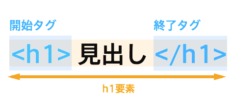
こちらは実際のHTMLの例です。開始タグと書かれた下にh1と書かれていますね。この部分が、この箱の「役割」を示します。つまり、この箱に入ったテキストはh1という役割を持っている、ということになります(h1が何なのかは後述します)。
基本的には、「開始タグ」から「終了タグ」の中に要素のタイプ(見出し(h1)、段落(p)、リスト(li)など)を入れます。このセットで、ひとつの箱の完成です。
さて、HTMLタグについて詳しくみてみましょう。なお、役割を示す要素のタイプについて、今はひとつひとつの意味を知らなくても大丈夫です。
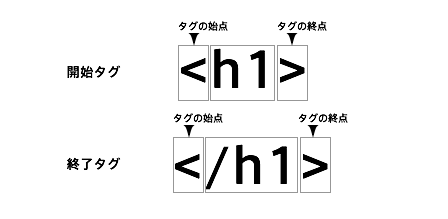
開始タグから説明していきます。
開始タグは、タグの始点（<）からタグの終点（>）の中に、要素のタイプ（ここではh1）が入っています。要素の開始地点を示します。
終了タグはほぼ開始タグと同じ書き方ですが、唯一違うのは要素のタイプの前にスラッシュ(/)を入れることです。これによって、要素の終了地点を示します。
HTMLの要素は基本的に開始タグから始まり、終了タグで終了します。以下は、その例です。
1 2 |
<h1>見出し</h1>
<p>段落</p>
|
中に入っているテキストをより明確にするために、以下のように段落をつけて書く場合もあります。
1 2 3 4 5 6 |
<h1>
見出し
</h1>
<p>
段落
</p>
|
これなら、h1という要素の中に「見出し」という文字が入っていること、そしてpという要素の中に「段落」という文字が入っていることがわかりやすいですね。
また以下のように、終了タグが必要ない要素も存在します。
1 |
<br>
|
1 |
<img src="hoge.png" alt="hogehoge">
|
ここまでを把握したら、早速HTMLを書いていくファイルを作成します。
以下の指示に従い、「test.html」という名前のファイルを新規作成、デスクトップに保存しましょう
controlキー + spaceキーでスポットライト検索を呼び出し、「sublimetext」と入力すると早いはずです。
commandキー + n を押すと、ファイルを新規作成できます
commandキー + s を押すと、ファイル保存のためのポップアップが出ます。下図に従って、ファイルを保存してください。
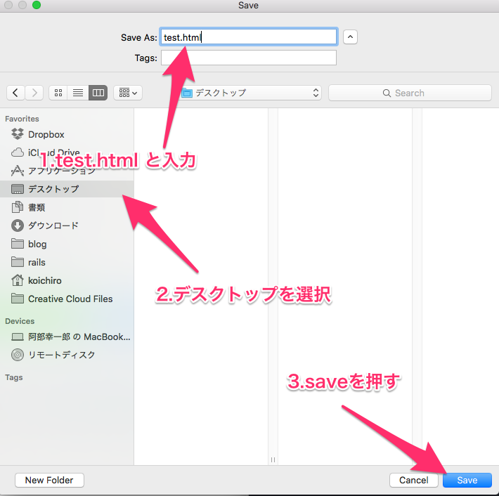
作成できたら、以下のHTMLをそのままコピーし貼り付けてください。
1 2 3 4 5 6 7 8 9 10 |
<!DOCTYPE HTML>
<html>
<head>
<meta charset="UTF-8" />
<title></title>
</head>
<body>
Hello, world!
</body>
</html>
|
貼り付けたら、command + s を押して忘れずに上書き保存をしましょう。
これが、基本となるHTMLになります。
HTMLを書くときは、はじめにこのコードを使いましょう。
本章のコードは、この中の「body」要素の中に追記していきます。
今作ったHTMLをブラウザに反映させてみましょう。いくつか方法がありますが、一番簡単な方法は以下の動画のようにFinderからhtmlファイルをブラウザ上にドラッグ＆ドロップすることです。
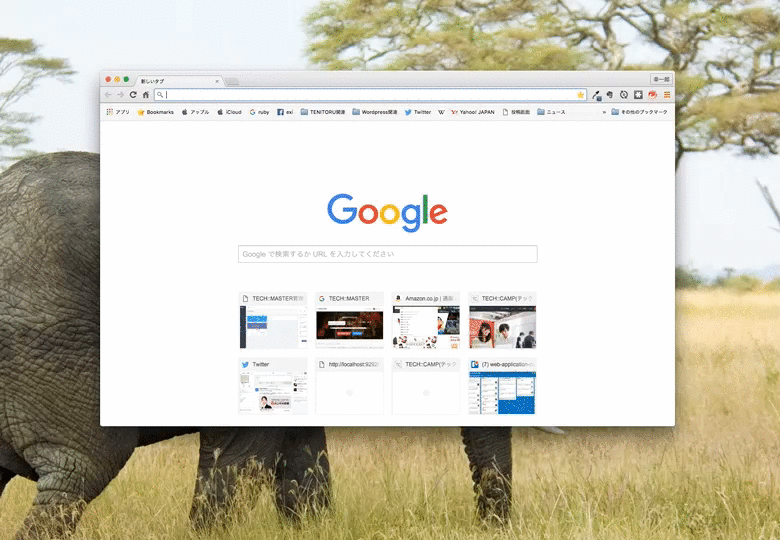
htmlファイルをDesktopに保存していれば、上記の動画のような操作でうまくいくはずです。
今後も同じような形で随時確認をするので、こちらの操作は覚えておきましょう。
本項では、基礎的なHTMLの構造を学びます。HTMLは大きく分けるとhead要素とbody要素という部分で構成されています。
head要素は、メタ情報と呼ばれるサイト自体に関する情報を定義する部分です。こちらで定義したものは見た目には大きく影響しません。
body要素は、箱の構成やテキストなど、実際に見た目に大きく反映されるものを定義していく部分です。
HTMLファイルは、基本的に以下のような構造になっています。
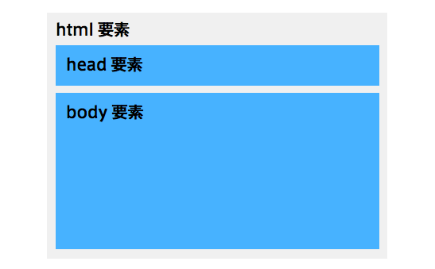
以下、その他重要な内容について説明します。ただし、今はほとんど「決まり文句として書くのだ」という認識で十分です。
<!DOCTYPE HTML>について
この <!DOCTYPE HTML> は、この文章がHTML文章であることを宣言する要素です。
HTMLを書くときには、必要になるものです。
記述をしない場合、レイアウトが崩れたり、表示がされない場合があります。
<meta charset="UTF-8" />について
meta要素は、文章に関する情報を指定する時に使用します。
また、charset=に続く文字はの文書の「文字コード」を指定します。
文字コードとは、「この文章は日本語で書かれています」ということを指定するものです。
他にもSHIFT-JISなどがありますが、主流はUTF-8なので、UTF-8を指定しましょう。
記述しない場合、文章が文字化けをしてしまって読めなくなってしまいます。
meta要素に関する説明の際に出てきた属性について学びましょう。
属性とは、HTML要素の役割を細かく定義するための付加的な情報のことです。属性を含むHTMLタグは、以下の図のような構成になっています。
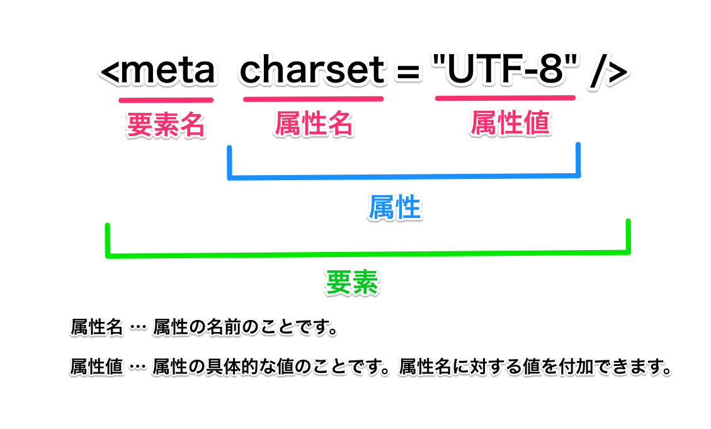
では実際にコードを見てみましょう。今ここで登場する要素名を覚える必要はありません。要素に対してどのように属性を記述するかを学びましょう。
例えばa要素は「クリックされると別のページに移動させる」という役割を持つ文字を作成する要素です。ということは、この要素自体が別ページのURLを持っていなければいけません。こんな時に属性を利用します。
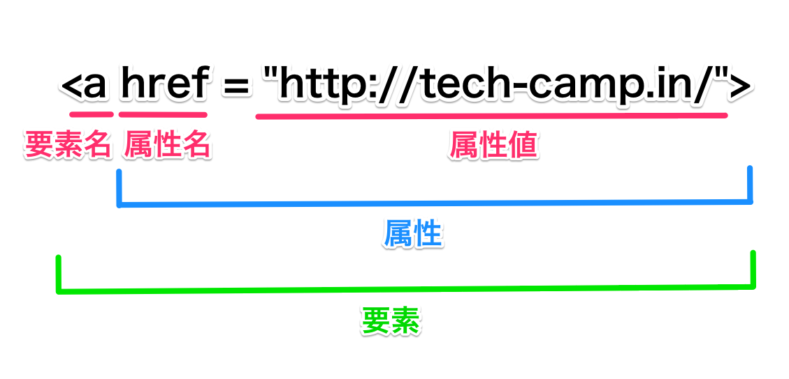
上記の図のように、a要素は「href」という属性を持ち、その値がリンク先のURLになります。これがなければ、リンクさせることができません。
img要素は、画像を表示するための要素です。ということは、画像自体の在り処をimg要素自身が持っている必要がありますね。こんな時も、属性を利用します。
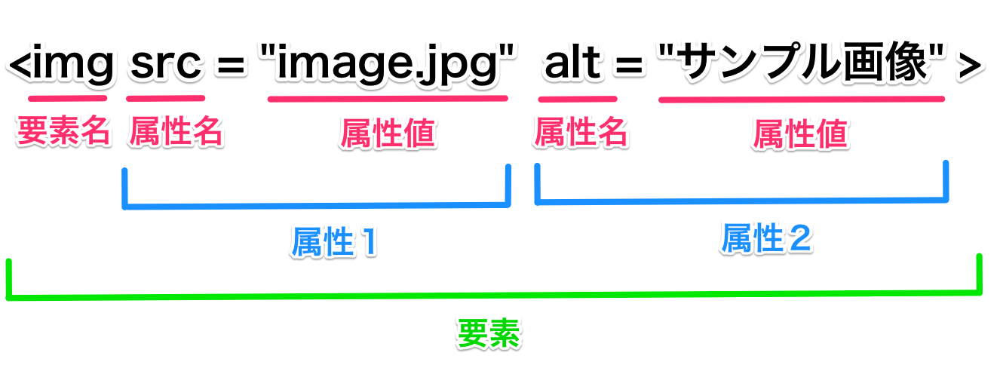
img要素は、srcという要素に画像の在り処を示す値を持っています。
また、altという属性も持ちます。このように、特定の要素は属性を何個ももつことがあります。
属性の記入方法は以下です。
属性に関しては次の章以降でも登場するので、そちらで具体的な使い方について学びましょう。
また、HTMLでは属性を定義することで要素に役割を与えたり、情報を送信したり出来ます。こちらについてはLesson4などで詳しく説明します。
ここからは、実際にHTMLを書きブラウザに情報を反映させるところまでを学習します。
より詳しく解説するために、HTMLファイル上にメモを残せるようにしましょう。ただ文字を書くだけではテキストとして認識されてしまうので、メモとして機能するよう(HTMLとしては反映されないよう)工夫をする必要があります。
そこで、コメントアウトを利用します。
コメントアウトとは、htmlに記述しても反映されない文字のことです。
上記のtest.htmlの中身にある<!-- -->に囲まれた部分がコメントアウトとなります。主に、メモを残しておく時などに使います。
今後、本教材のコードの例の中でコメントアウトを見かけた時は、コードの説明をしているものと思ってください。
test.htmlを以下のように編集してください。
1 2 3 4 5 6 7 8 9 10 11 |
<!DOCTYPE HTML>
<html>
<!--これからhtmlの要素について学びます-->
<head>
<meta charset="UTF-8" />
<title></title>
</head>
<body>
Hello, world!
</body>
</html>
|
この状態で保存をしてブラウザでhtmlを確認しても、変化がないことがわかります。
また実際にコメントアウトを利用する際はcommand + /のショートカットキーを利用します。範囲選択中にcommand + /を押すことで、選択範囲を全てコメントアウトすることができます。
続いてhead要素について学習します。先ほど作成したtest.htmlをもう一度確認しましょう。
1 2 3 4 5 6 7 8 9 10 |
<!DOCTYPE HTML>
<html>
<head>
<meta charset="UTF-8" />
<title></title>
</head>
<body>
</body>
</html>
|
3行目 ~ 6行目は、head要素に含まれていることがわかります。こちらは、閲覧する人に見せる必要のないサイトの情報を定義する場所になります。
以下のとおり、headタグの間にまた別のタグを書いてサイトの情報を定義していきます。
1 2 3 4 5 6 7 8 9 10 11 12 |
<!DOCTYPE HTML>
<html>
<head>
<!-- ここから -->
<meta charset="UTF-8" />
<title></title>
<!-- ここまでにhead要素を書きます -->
</head>
<body>
</body>
</html>
|
サイトの情報（タイトルや説明など）を記述することができますが、ブラウザ内には表示されません。
| 要素名 | 用途 |
|---|---|
| title要素 | サイトのタイトルを付ける |
| meta要素 | 文章の情報を保存し、ブラウザや検索エンジン（Googleなど）に知らせるため |
| link要素 | スタイルシートを指定する |
| script要素 | JavaScriptを指定する |
例えば、サイトのタイトルを変えてみましょう。そのためには、head要素内のtitleタグの中に、サイト名を書きます。
自分の自己紹介のサイトなので、自分の名前をサイト名にしてもいいですし、自分の好きな言葉をサイト名にしても構いません。
5 |
<title>サイト名を入れてみましょう</title>
|
test.htmlを保存してもう一度ブラウザのタブの部分を見てみましょう。以下の画像の部分に、titleタグの中に入れた文字が表示されていれば成功です。
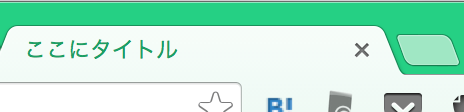
ではまず、単純に文字をブラウザに表示してみましょう。そのためには、body要素の中に要素を書いていきます。
HTMLの、文字を表示させるためのコンテンツなどを入れる場所です。
これから書いていくHTMLの要素は、このbodyの中に書いていきましょう。
1 2 3 4 5 6 7 8 9 10 11 12 13 14 |
<!DOCTYPE HTML>
<html>
<head>
<meta charset="UTF-8" />
<title>サイト名</title>
</head>
<body>
<!-- 主にここからコードを追記していきます -->
<!-- ここまでの間にコードを書きます -->
</body>
</html>
|
1 2 3 |
<body>
HTMLを勉強中！
</body>
|
test.htmlを保存しブラウザで確認すると、表示されている文章が「Hello, world!」から「HTMLを勉強中！」に変わっているのが確認できるでしょう。
しかし、このまま文字を書き込んでいくだけでは普段見ているような綺麗なサイトのレイアウトを実現することができません。
実は、webサイトを形作るためにはいくつかのルールとコツがあります。
続いて本項では、HTMLの概念についてざっくりお伝えしておきます。HTML/CSSについて学ぶ上で、常に以下の2つのポイントを念頭に置くと良いでしょう。
1. HTMLとは左上に重力のある積み木である
2. 積み木の一つ一つは中身によって大きさの変わる箱であり、入れ子構造になっている
1, 2について、例を交えつつ解説していきます。
CSSや、htmlの要素が出てきますが、まずイメージをつかんでいただくためなのでここでは特に覚える必要はありません。はじめの章で出てきた以下の図を念頭に置きつつ読み進めましょう。
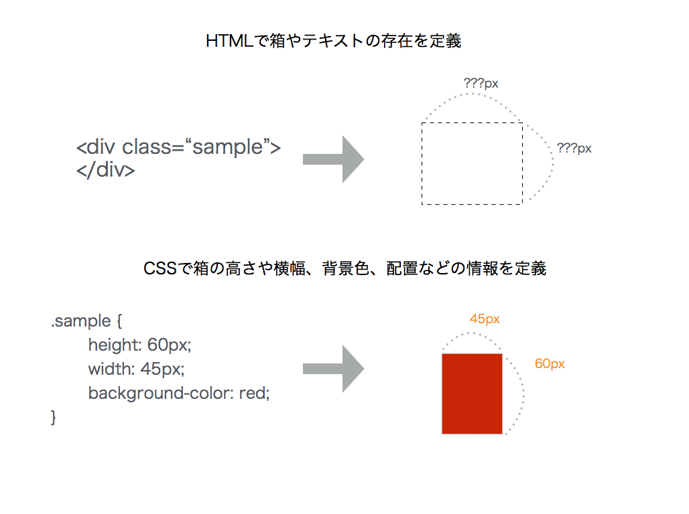
まず以下の例ですが、htmlのbody要素の中に「box1」「box2」「box3」という名のついた箱を定義しています(名前はclassという属性によってつけることができます)。
1 2 3 4 5 6 7 8 9 10 11 12 13 14 15 16 |
<!DOCTYPE HTML>
<html>
<head>
<meta charset="UTF-8" />
<title></title>
<link rel="stylesheet" href="style.css">
</head>
<body>
<div class="box1">
</div>
<div class="box2">
</div>
<div class="box3">
</div>
</body>
</html>
|
このままでは箱になんの装飾もしていないので、ブラウザ上では何も見えません。この段階では、 箱はHTMLとしては存在しているけど、見えない状態です。
以下のように、CSS によって箱の大きさを決めたり、色を決めたりすることで初めて視認することができます。widthは横幅の指定、heightは高さの指定、background-colorは背景色の指定です。opacityは、要素の透明度です。
1 2 3 4 5 6 7 8 9 10 11 12 13 14 15 16 17 18 |
.box1{
width: 100px;
height: 100px;
background-color: red;
opacity: 0.5;
}
.box2{
width: 150px;
height: 150px;
background-color: green;
opacity: 0.5;
}
.box3{
width: 120px;
height: 120px;
background-color: blue;
opacity: 0.5;
}
|
上記のようなcssファイルは、htmlのhead要素に以下のように書くことで読み込むことができます。
1 2 3 4 5 6 7 8 9 10 11 12 13 14 15 16 |
<!DOCTYPE HTML>
<html>
<head>
<meta charset="UTF-8" />
<title></title>
<link rel="stylesheet" href="style.css">
</head>
<body>
<div class="box1">
</div>
<div class="box2">
</div>
<div class="box3">
</div>
</body>
</html>
|
すると、ブラウザに以下のような箱が出現します。ブラウザの左上が起点となって、box1,2,3が積まれているのがわかります。

箱の一つ一つは、主にブロック要素と呼ばれるものになります。先ほどの例では文字を直接body要素の中に書き込んでいましたが、本来であれば、ブロック要素の中に文字を設置するのが普通です。箱の中に文字を入れると、文字は箱の中いっぱいに広がります。
1 2 3 4 5 6 7 8 9 10 11 12 13 14 15 16 17 18 |
<!DOCTYPE HTML>
<html>
<head>
<meta charset="UTF-8" />
<title></title>
<link rel="stylesheet" href="style.css">
</head>
<body>
<div class="box1">
text text text text
</div>
<div class="box2">
テキストテキストテキストテキストテキストテキストテキストテキストテキストテキスト
</div>
<div class="box3">
</div>
</body>
</html>
|
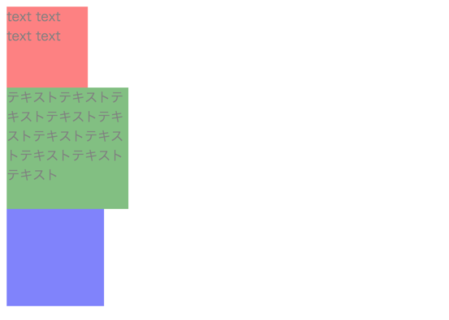
また、箱の中に箱を入れることもできます。外側の箱のことを 親要素、内側に入っている箱のことを 子要素と呼び表します。その場合は以下のように、親要素の開始タグと閉じタグの間に、子要素の開始タグと閉じタグを含めます。以下の例ではbox2という名前のついた箱の中にbox3という箱が入っていますが、これをわかりやすくするために インデントをしています。
1 2 3 4 5 6 7 8 9 10 11 12 13 14 15 16 |
<!DOCTYPE HTML>
<html>
<head>
<meta charset="UTF-8" />
<title></title>
<link rel="stylesheet" href="style.css">
</head>
<body>
<div class="box1">
</div>
<div class="box2">
<div class="box3">
</div>
</div>
</body>
</html>
|
すると、ブラウザ上では以下のように表示されます。 子要素の位置は、親要素の左上になっていることに注目してください。
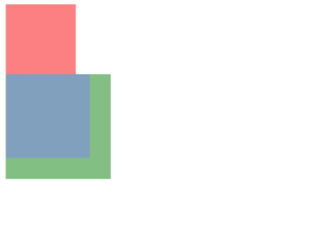
普段良く見るサイトのレイアウトは、すべて2つのポイントによって成り立っています。例えば、TECH::CAMPのホームページの一部に関しては以下のような箱の入れ子によって成り立っています。
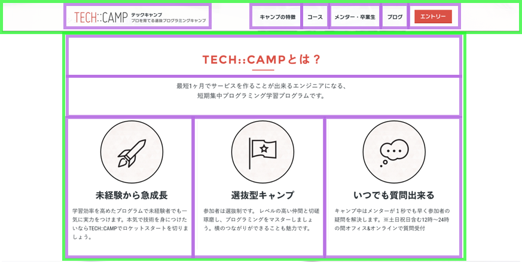
HTMLに関する2つのコツに関しては以上です。HTMLが箱の入れ子によって成り立っていることが理解できれば、あとは以下のような点を学ぶだけでwebページのレイアウトを完成させることができます。
これらは後の章で出てくるものですが、とても大切になるので特に注意して読みましょう。
HTMLの箱は、大きく分けて2種類あります。「ブロック要素」と「インライン要素」です。
1 2 3 4 |
<body>
<h1>サイト名</h1>
<p>ここに文字を書きます。</p>
</body>
|
上のように書いた<h1></h1>と<p></p>は、ブロック要素と呼ばれる箱です。
HTMLにはブロック要素とインライン要素が存在します。
サイトのレイアウトをするときに重要となるので、このブロック要素とインライン要素を覚えておきましょう。
ブロック要素は、言葉の通り「一つのブロック」として扱われます。基本的には、CSSで高さと横幅を指定することになります。
CSSで何も指定していない場合、ウィンドウの左右いっぱいに表示され、なおかつ上下に改行が入ります。
長方形の長い箱とおぼえておくとよいでしょう。
ブロック要素を作るHTML要素の1つに、 div要素があります。(下記サンプル参照)
レイアウトを作るときによく使います。
インライン要素は、テキストを装飾するときによく使います。テキストの一部を囲い、そこに役割を与えます。あくまでも文字の一部の範囲指定なので、インライン要素は連続して横に並びます。
インライン要素を作るHTML要素の1つに、 span要素があります。(下記サンプル参照)
以下のサンプルを見て、ブロック要素とインライン要素の違いを確認してみましょう。
Webサイトでよく使われるブロック要素が、p要素です。
paragraphの略で、段落を示すブロック要素です。文章を書く際、段落を作る時に使います。
1 |
<p>このサイトは、●●です。</p>
|
ブラウザで確認してみると、ただ文章を書いた時となにも変わらない結果のように見えるかもしれません。しかし、この文章はブロック要素の中に入っています。これで、p要素自体にCSSを当て、この文章に背景色をつけたり、別の要素から幅をとったり、様々なレイアウトを実現することができるようになります。
今はピンとこないかもしれませんが、次章から実践でどんどん使っていくなかで便利さを実感できるでしょう。
ここまでで、HTMLについての最低限の知識に触れることができました。次は、CSSの基礎知識について見ていきましょう。
ここからは、CSSについて学習します。
CSSとは、HTMLファイルで作られた骨組みを装飾するものです。要素の高さや大きさ、背景色、並び方、テキストの色やフォント、アニメーションなどを設定できます。
ここでは「htmlで作成した骨組みをcssで装飾する」というやり方と概念さえ把握すれば、装飾の種類にどんなものがあるかといったことは暗記する必要はありません。それらは、少し調べればすぐに見つかるためです。
HTML/CSSは実践が全てです。本章では基礎知識に留めますが、次章以降では実際にサイトを作っていきます。また、最後に課題を用意しました。どんどん実践して、技術を身につけていきましょう。
では、早速学習を始めていきましょう。
HTMLの文章にCSSを適用するためには、まずcssを記入するファイルを作成する必要があります。
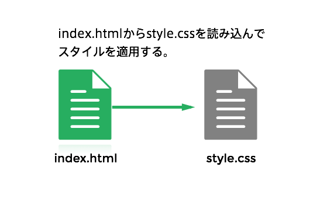
HTMLでは拡張子が.htmlでしたが、CSSは.cssになります。
今回はDesktopにtest.htmlがあるので、同じくDesktopにstyle.cssというファイルを作成しましょう。
続いて、test.htmlにstyle.cssを読み込みます。
そのためには、htmlの <head> タグ内に <link>というタグを設置します。linkタグのrel属性にstylesheetを、href属性に読み込みたいファイルの名前を書くことで、そのhtmlにCSSを読み込むことができます。
以下のタグを、test.htmlの <head> タグ内に書きましょう。
1 2 3 |
<head>
<link rel="stylesheet" href="style.css">
</head>
|
記述を終えたら、必ずcommand+sを入力してファイルを上書き保存しましょう。
これから、style.cssにCSSを記述していきます。
CSSを使ってHTML文章を装飾していく上で基本になるのは、「セレクタ」です。 セレクタは「CSSを適用したいhtml要素を選択するため」のものです。
セレクタの構造は、セレクタ/プロパティ/値からなっています。
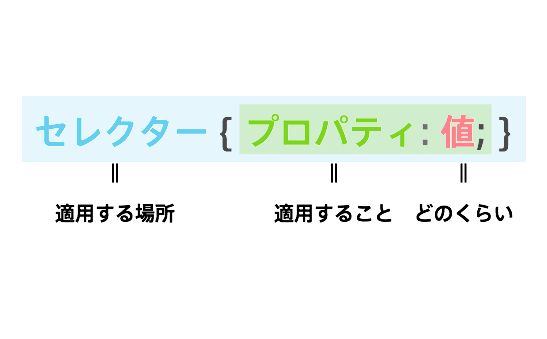
基本の形は「セレクタ { プロパティ: 値; }」となり、セレクタ構造を示すために{}を、プロパティの値を指定する場合は、 :を使い、値の最後には ;を書きます。
具体的なプロパティについては後程詳しく説明します。
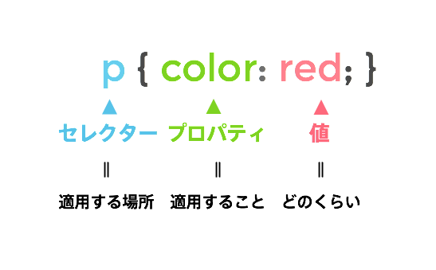
CSSは、読みやすくするため以下のように段を組んで書くことが一般的です。
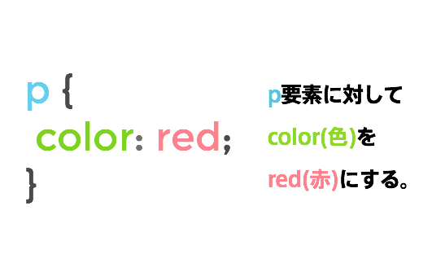
またHTML同様、半角で書きましょう。
ここまで、ある要素に対してプロパティを適用する方法を学びました。しかし、同じ要素が複数ある場合に、特定の要素にのみプロパティを適用したい場合はどうすれば良いでしょうか。そういった場合、要素にidやclassといった属性値を付与し、その値で要素を特定する、という方法を取ります。要素にアダ名をつけるようなイメージです。
HTMLの特定の要素にID属性をつけ、それを目印にして、スタイルを適用するものです。HTMLではid="xxx"とID名(xxx)をつけ、CSSでは、#xxxとシャープの後にID名を指定します。
全てのhtmlタグにはclassという属性を付与することができます。これは、あるhtml要素に対してつける識別子です。
class属性は、HTMLの文章の中で何度も使うことができます。
HTMLでは、class="xxx"(xxx)と書きますが、CSSでは、「.xxx」とピリオドの後にclass名を指定します。
特定の要素にスタイルを適用したい場合、基本的にはその要素にclassで名前をつけて、cssファイルでclassを指定して装飾をしていきます。idを利用しないのは、idだと1箇所しか指定できないためです。同じ指定をしたい要素が複数ある時に使い勝手が良くありません。
このように、HTML中に数ある要素から選択したい要素を特定し、それぞれに対してCSSを当てるためにclassセレクタとidセレクタがあります。
複数の要素に一括でCSSを当てたいときはclassセレクタ、HTML中に一つしかない要素に当てたいときはidセレクタを使うのが良いでしょう。
1 |
<p class="title">サイト名</p>
|
ここまで、CSSを特定のHTMLに適用する方法とセレクタやプロパティなどのCSSの文法について学びました。本章の仕上げに、現在test.htmlにあるp要素の中身のテキストの色を、CSSを利用して変更してみましょう。
あるhtml要素の中に入っているテキストの文字色を変えるためにはcolorプロパティを利用します。
文字の色はカラー名,hex,rgb,cmyk,rgbaなどで指定することができます。
一般的に使用されているのは、カラー名,hex,rgb,rgbaです。
指定したcolorプロパティは、その子要素まで適用されます。
2 3 4 |
p {
color: red;
}
|
cssを保存し、もう一度ブラウザでtest.htmlを表示してみましょう。以下のような結果になったでしょうか(ブラウザでtest.htmlを開きっぱなしの場合、リロードをする必要があります)。
以下の「Result」「HTML」「css」を切り替えると、それぞれ「ブラウザの表示」html」「css」を確認することができます。
お疲れ様でした！このカリキュラムの終わりに確認問題を解きましょう。
テストを受けた回数：1回
最高得点：80点
合否：合格
 大宅 誠人
大宅 誠人